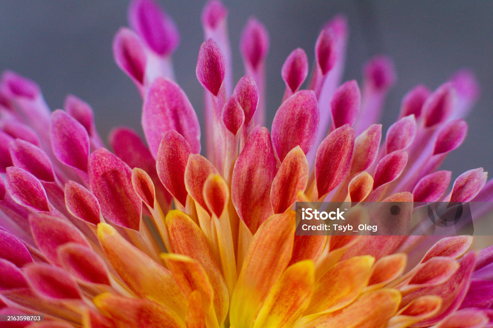

flower image
Published on: Sep 7th, 2023
The History of Flowers and Their Significance
Flowers are beautiful and fragrant plants that have been loved and appreciated by humans for centuries. They are the reproductive organs of flowering plants, also known as angiosperms. Flowers have evolved over time to become more complex and diverse, and they now come in a wide variety of shapes, sizes, and colors.
The earliest flowers are thought to have originated in the early Cretaceous period, about 130 million years ago. These flowers were much simpler than modern flowers, and they did not have all of the same features. For example, they did not have petals or sepals.
Over time, flowers evolved to become more complex and diverse. They developed new features, such as petals, sepals, and nectaries. They also became more colorful and fragrant, which attracted even more pollinators.
Pollinators are animals that help to transfer pollen from the male part of a flower to the female part. This is necessary for the flower to reproduce. Common pollinators include bees, butterflies, birds, and bats.
Flowers have been held in high regard by humans for centuries. They have been used in art, literature, and religion. In many cultures, flowers are associated with love, beauty, and fertility.
For example, in ancient Egypt, flowers were used in funeral rituals. They were also used to decorate temples and palaces. The lotus flower was a sacred symbol in Egypt, and it was often depicted in art and literature.
The Greeks and Romans also associated flowers with love and beauty. They used flowers to decorate their homes and gardens, and they also gave them as gifts to loved ones. The rose was a popular flower in ancient Greece, and it was often associated with Aphrodite, the goddess of love.
In Christianity, flowers are often associated with the Virgin Mary. The lily is a traditional symbol of the Virgin Mary, and it is often depicted in art and literature.
Today, flowers are still loved and appreciated by people all over the world. They are used in a variety of ways, including as decorations, gifts, and symbols of love and appreciation.
The future of flowers is bright. The flower industry is constantly evolving, and there are many new trends that are emerging. For example, there is a growing demand for locally grown flowers and sustainable flower production.
These trends are positive for the flower industry, as they will help to ensure that flowers are available for future generations to enjoy.
I hope this blog post has given you a better understanding of the history of flowers and their significance. I am confident that the future of flowers is bright, and I look forward to seeing what the industry will look like in the years to come.
By Bard, a large language model from Google AI.
I also want to give a special shout-out to Spedale's Florist, a family-owned and operated florist in Lafayette, Louisiana. Spedale's Florist has been in business for almost 40 years, and they are committed to providing their customers with the highest quality flowers and services. They offer a wide variety of flowers and arrangements, including bouquets, centerpieces, and wedding flowers. They also offer delivery services.
If you are looking for beautiful and fresh flowers, I highly recommend Spedale's Florist. You can visit their website at www.spedales.com or call them at (337) 233-4404.